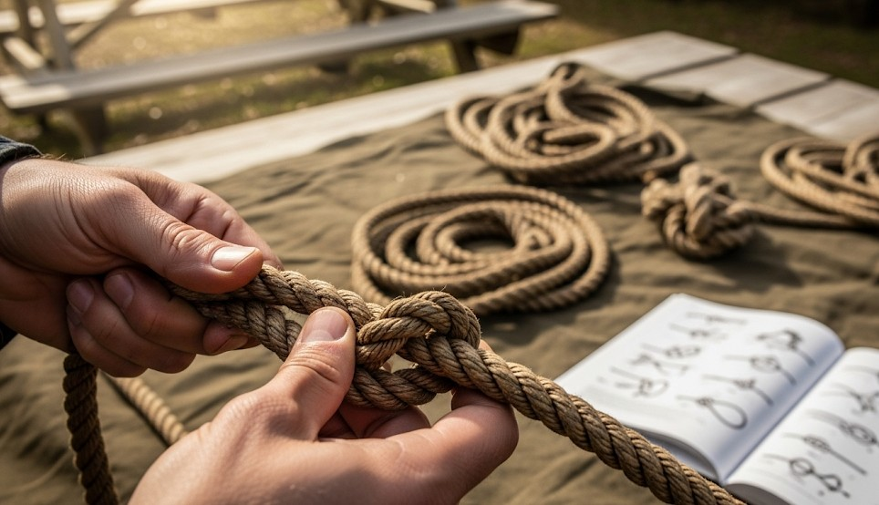

Eight Field Knots You’ll Actually Use
Objective
Learn eight knots that cover 95% of field tasks.
The Set
- Bowline: fixed loop that won’t slip.
- Figure‑8 on a bight: strong midline loop.
- Clove hitch: quick anchor around posts.
- Trucker’s hitch: tensioning lines (shelters).
- Prusik: sliding friction hitch for ridgelines.
- Sheet bend: join ropes of different sizes.
- Zeppelin bend: secure, unties after load.
- Half hitch + stopper: finish and lock lines.
Real Example
Ridgeline with two prusiks and a trucker’s hitch cut tarp pitch time by half and held through a windy night.
Checklist
- 3 mm cord for prusiks
- 6–8 mm cord for general use
Contingencies
- Gloves on → practice larger bends like figure‑8 and bowline.
After‑Action
Tie each knot 20 times this week; teach someone else to lock it in.
← Previous | All Articles | Next →